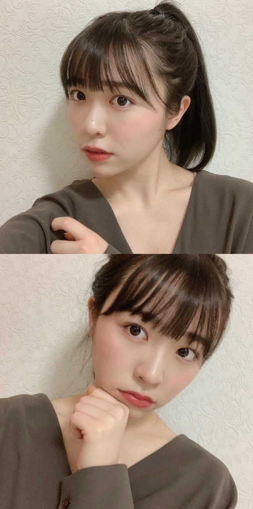
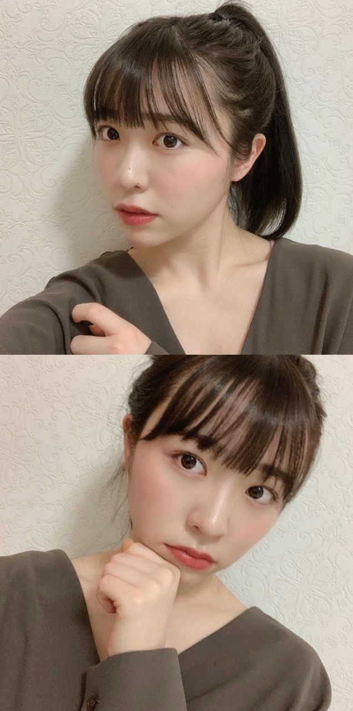

2020/0506Wedカーテン塗れ


パッと思い立って朝8時に起き、
うさぎの部屋の掃除、部屋の掃除をしました。
それは毎日している事なのですが
普段あんまりやらない細かい部分を
一気に綺麗にしました。
気持ちが良かったです！
そして夕飯には必ずと言っていいほど
たくあん、キムチを食べています
どうでもいい余談でした

この期間のうちにできる事が沢山ある事に気付き
それをしている時間が何となく
幸せだったりもします

キムチとたくあんこれ美味しいよ！
通販にあるよ！
コロナ終わったら是非買いに行ってみて！
などあればたくあん、キムチ情報
教えて下さい。
みり愛
パッと思い立って朝8時に起き、
うさぎの部屋の掃除、部屋の掃除をしました。
それは毎日している事なのですが
普段あんまりやらない細かい部分を
一気に綺麗にしました。
気持ちが良かったです！
そして夕飯には必ずと言っていいほど
たくあん、キムチを食べています
どうでもいい余談でした
この期間のうちにできる事が沢山ある事に気付き
それをしている時間が何となく
幸せだったりもします

キムチとたくあんこれ美味しいよ！
通販にあるよ！
コロナ終わったら是非買いに行ってみて！
などあればたくあん、キムチ情報
教えて下さい。
みり愛
2020/05/06 20:48
コメント(478)
みり愛ちゃん大好きです！
私は中学生なんですけどみり愛ちゃんみたいになりたいです！なのでスキンケアやコスメを紹介して欲しいです！大好きなのでよろしくお願いします！
私は中学生なんですけどみり愛ちゃんみたいになりたいです！なのでスキンケアやコスメを紹介して欲しいです！大好きなのでよろしくお願いします！
更新ありがとう！！
僕もキムチ好きなのでやってみます！
僕は冷奴にキムチとごま油かけて食べてます！！美味しいですよ！
僕もキムチ好きなのでやってみます！
僕は冷奴にキムチとごま油かけて食べてます！！美味しいですよ！
岐阜県各務原市はキムチ有名です！！
各務原市は堀未央奈ちゃんの実家とも近いよ〜
ぜひ！！！
各務原市は堀未央奈ちゃんの実家とも近いよ〜
ぜひ！！！
みり愛ちゃんブログ更新ありがとう！
最近はコロナの影響で暇すぎてやるつもりのなかった乃木恋の彼氏イベントをやってるよ。
1列目に入りたいんだけど今回皆のポイントが高すぎてキツい…
それと、みり愛ちゃん推しの自炊がどんどん広がっていってる気がする笑
キムチは「ご飯がススム」ってやつが好きなんだけど辛みはそんなにないからみり愛ちゃんにとっては微妙かな〜
以上です。コロナには気を付けて。
最近はコロナの影響で暇すぎてやるつもりのなかった乃木恋の彼氏イベントをやってるよ。
1列目に入りたいんだけど今回皆のポイントが高すぎてキツい…
それと、みり愛ちゃん推しの自炊がどんどん広がっていってる気がする笑
キムチは「ご飯がススム」ってやつが好きなんだけど辛みはそんなにないからみり愛ちゃんにとっては微妙かな〜
以上です。コロナには気を付けて。
ポニテみり愛最高です！
吉野家のキムチオススメだよ
吉野家のキムチオススメだよ
みりあちゃん！
ブログ更新ありがとうございます！
写真かわいいです！早くライブで風船は生きているを聞きたいです！この曲大好きです！
ブログ更新ありがとうございます！
写真かわいいです！早くライブで風船は生きているを聞きたいです！この曲大好きです！
応援しています‼️
みり愛ブログ更新ありがとう！
元気ですかーーーーー？
家で何してるかおしえてほしいー
また会おうね
元気ですかーーーーー？
家で何してるかおしえてほしいー
また会おうね
お疲れ様です。
お漬け物であれば千枚漬けは食べたことある？これもとても美味しいので機会があれば食べてみてね:-)
みり愛ちゃんが元気そうで嬉しいです。またね
お漬け物であれば千枚漬けは食べたことある？これもとても美味しいので機会があれば食べてみてね:-)
みり愛ちゃんが元気そうで嬉しいです。またね
たくあん＆キムチご飯のおともに最高
みり愛コロナに気を付けて頑張ってね
みり愛コロナに気を付けて頑張ってね
更新ありがとう！
なかなか会えないし声聞けないくてちょっと寂しいけど、モバメとブログで元気出る！
お互い身体に気をつけて！！
なかなか会えないし声聞けないくてちょっと寂しいけど、モバメとブログで元気出る！
お互い身体に気をつけて！！
人生楽しむぞー
キムチって美味しいですよね！
なんであんなにもご飯と合うのでしょうか？
なんであんなにもご飯と合うのでしょうか？
ブログ更新ありがとう！
キムチとたくあん良いよね〜。
たくあんは祖母が作ってくれるからそれを毎食と言っていいほど欠かさず食べてるよ！
キムチはいつもは普通にスーパーで売ってるキムチを買って食べるんだけど、特別な日とか美味しいキムチ食べたいって時には行きつけの焼肉屋さんに行ってキムチを頼むんだ〜。
そして、持ち帰りもできるから必ず買って帰って家でも食べるよ！！
店長が韓国の方で本場のキムチって感じだからめっちゃニンニク強くてにおいがすごいけどめちゃくちゃ美味しいから今度握手会の時にでも教えるね！！
まぁ宮崎県のお店だからあんまり来る機会ないと思うけど
モバメ毎日ありがとうね！
こんな期間だからいつも以上に元気もらってます。
キムチとたくあん良いよね〜。
たくあんは祖母が作ってくれるからそれを毎食と言っていいほど欠かさず食べてるよ！
キムチはいつもは普通にスーパーで売ってるキムチを買って食べるんだけど、特別な日とか美味しいキムチ食べたいって時には行きつけの焼肉屋さんに行ってキムチを頼むんだ〜。
そして、持ち帰りもできるから必ず買って帰って家でも食べるよ！！
店長が韓国の方で本場のキムチって感じだからめっちゃニンニク強くてにおいがすごいけどめちゃくちゃ美味しいから今度握手会の時にでも教えるね！！
まぁ宮崎県のお店だからあんまり来る機会ないと思うけど
モバメ毎日ありがとうね！
こんな期間だからいつも以上に元気もらってます。
渡辺みり愛❤こんばんは❗毎日、みり愛がうさちゃんの部屋綺麗にしているんだね(^-^)v大切にして飼うんだよ(^_^)v夕飯は、沢庵とキムチ食べたんだね。毎日食べてるの？前より東京は、コロナ減って来てるよね。でも家でゆっくりしてなね。早くコロナなくなるといいね。令和になってから色々あるよね。体調に気を付けてね(^o^)vみり愛❤大好きだし愛してる ♥❤可愛いね(*^_^*)
コメントは読んでるのかな？
いつもモバメ沢山くれてありがとう！
本当に元気もらってるよ！
いつもモバメ沢山くれてありがとう！
本当に元気もらってるよ！
みり愛ちゃんブログ更新ありがとー！
高いポニーテール見せてよー！！って思ったら上げてくれた(笑)
キムチ美味しいよねー！
でも普通にスーパーで売ってる「こくうま」しか買わないな(笑)
牛角のも美味しかった気がするけど、やっぱりちゃんとした韓国キムチのほうが結構好きかも…
みり愛ちゃん美味しいと思ったキムチとかも教えて欲しいなー！
高いポニーテール見せてよー！！って思ったら上げてくれた(笑)
キムチ美味しいよねー！
でも普通にスーパーで売ってる「こくうま」しか買わないな(笑)
牛角のも美味しかった気がするけど、やっぱりちゃんとした韓国キムチのほうが結構好きかも…
みり愛ちゃん美味しいと思ったキムチとかも教えて欲しいなー！
元気そうで何より。外出規制解けたら伊織ちゃんにも声かけしてた真夏さんリスペクト軍団で食事会やってください。
ブログの更新ありがとうございました
お家で過ごす日々がまた延長されて、大変な事も継続していきますが、頑張っていきましょう。
お掃除も普段やれないところまでできて、スッキリな気持ちわかります。
文章の中に「コロナ終わったら」とありましたが
みり愛ちゃんがそう言ってくれたから、明るい気持ちになれました。
完全に終息するのはまだ時間がかかるかもですが、少しずつ今までの様にできる事が徐々に増えていくのかなぁ、という気もしています。
きっとまた忙しい日々があと少ししたらやってくると思いますので、今のうちにお家でできる事を頑張られて下さい
それではまた
お家で過ごす日々がまた延長されて、大変な事も継続していきますが、頑張っていきましょう。
お掃除も普段やれないところまでできて、スッキリな気持ちわかります。
文章の中に「コロナ終わったら」とありましたが
みり愛ちゃんがそう言ってくれたから、明るい気持ちになれました。
完全に終息するのはまだ時間がかかるかもですが、少しずつ今までの様にできる事が徐々に増えていくのかなぁ、という気もしています。
きっとまた忙しい日々があと少ししたらやってくると思いますので、今のうちにお家でできる事を頑張られて下さい
それではまた
みり愛ちゃんブログ更新ありがとう。元気にしてますか？
最近は全くしてこなかった料理をしてみようと思って手始めにカルボナーラを作ってみたけどモタモタしすぎて失敗しました
どうでもよすぎる余談でした
キムチはね、ホタルイカキムチが今まで食べたキムチで一番美味しかった！キムチというよりホタルイカがメインっぽいけど。笑
お取り寄せできるから気になったら食べてみて〜
可愛い写真で明日から頑張る気力を補充できました
モバメもいつもありがとう
体調に気をつけてね！おやすみ
最近は全くしてこなかった料理をしてみようと思って手始めにカルボナーラを作ってみたけどモタモタしすぎて失敗しました
どうでもよすぎる余談でした
キムチはね、ホタルイカキムチが今まで食べたキムチで一番美味しかった！キムチというよりホタルイカがメインっぽいけど。笑
お取り寄せできるから気になったら食べてみて〜
可愛い写真で明日から頑張る気力を補充できました
モバメもいつもありがとう
体調に気をつけてね！おやすみ
みり愛ちゃんブログ更新ありがとう！
私はおうち時間よりバイト時間のが多いです（ ; ; ）
やっと連勤が終わったところです！
私も1人暮らしの時はキムチ毎日のように食べてたし豚キムチ作りまくってた笑
朝早く起きれないからみり愛ちゃんすごいなぁって思う！
私も明日こそは早く起きて犬猫のお世話と課題がんばる！
お互い楽しくお家時間過ごそうね〜
私はおうち時間よりバイト時間のが多いです（ ; ; ）
やっと連勤が終わったところです！
私も1人暮らしの時はキムチ毎日のように食べてたし豚キムチ作りまくってた笑
朝早く起きれないからみり愛ちゃんすごいなぁって思う！
私も明日こそは早く起きて犬猫のお世話と課題がんばる！
お互い楽しくお家時間過ごそうね〜
早くみり愛に会いたい！今日みり愛の夢見たよ！めっちゃ嬉しかった
キムチ納豆はよくやるのですがキムチたくあんはあまりやらないかなー！今度やってみます！自粛期間夜更かしし過ぎて昼夜逆転生活ばかりですがみり愛ちゃんは生活リズムがキープ出来てて凄いですね。体調にはお気をつけて下さい！しんどいけどこの期間なんとか乗り越えましょう。
みり愛ちゃん、ブログ更新ありがとう！
自分もたくあん好きだよ！キムチはそれほど…でもみり愛ちゃんが美味しいっていうから今度キムチ頑張って食べてみるよ！
写真沢山載せてくれてありがとう!!
またね！
自分もたくあん好きだよ！キムチはそれほど…でもみり愛ちゃんが美味しいっていうから今度キムチ頑張って食べてみるよ！
写真沢山載せてくれてありがとう!!
またね！
海老が入ってるキムチオススメだよー
キムタクご飯っていう料理があるから是非作ってみて！！
いつもモバメありがとう。
キムチは定番だけど牛角キムチ、吉野家キムチが入手しやすくて美味しいよ～
あとたくあんはウチ自家製で作ってるからな～・・・みり愛ちゃんもこの期間を機会に大根からたくあん漬けてみたりとかどう？ネットでも｢沢庵 作り方｣でやり方出てくるし、冷蔵庫とかでも寝かせれて結構作りやすいよ！
クックパッドや楽天レシピだと簡単なレシピあるからおすすめ。
キムチは定番だけど牛角キムチ、吉野家キムチが入手しやすくて美味しいよ～
あとたくあんはウチ自家製で作ってるからな～・・・みり愛ちゃんもこの期間を機会に大根からたくあん漬けてみたりとかどう？ネットでも｢沢庵 作り方｣でやり方出てくるし、冷蔵庫とかでも寝かせれて結構作りやすいよ！
クックパッドや楽天レシピだと簡単なレシピあるからおすすめ。
みり愛！！！
ｾｲﾔｯ∠( ˙-˙ )／ｾｲﾔｰｯ
みり愛ちゃんだいすきです
キムチには、卵かけご飯が最高に合うよ✨
オススメ～
ゆっくり出来る時間を大切にしようね。
オススメ～
ゆっくり出来る時間を大切にしようね。
私、焼肉屋さんでアルバイトをしていて、そこでアボカドキムチがめちゃくちゃ美味しいってことに気づきました！❤︎
お家でも簡単に作れるのでみり愛ちゃんも是非作って食べて見てほしいです！︎☺︎
22時からの東京ドームのライブ楽しみに待ってます！♡
お家でも簡単に作れるのでみり愛ちゃんも是非作って食べて見てほしいです！︎☺︎
22時からの東京ドームのライブ楽しみに待ってます！♡
みりあブログ更新ありがとう！！
コロナ終息しないかなぁ、、、
早く会いたいな！！
コロナ終息しないかなぁ、、、
早く会いたいな！！
ブログ更新ありがとうーー
こんな時期だから。みりあちゃんも体に気をつけてくださいー
握手いきまーす！
こんな時期だから。みりあちゃんも体に気をつけてくださいー
握手いきまーす！
みり愛ちゃん、ブログ更新ありがとう！
チェックのドットのシャツどこのですか？可愛い
チェックのドットのシャツどこのですか？可愛い
みり愛ーーー
可愛いみり愛ちゃん沢山見れて幸せ…
僕もこの時期にしかできないことを見つけたおかげでGWは有意義に過ごせたよ！
前向きに毎日を送りましょう！
前向きに毎日を送りましょう！
ブログ更新ありがとう〜☺︎
みり愛ちゃんに会えてなさすぎてほんとみり愛ちゃん不足です。。
はやく握手したいな〜〜(´▽`)
みり愛ちゃんに会えてなさすぎてほんとみり愛ちゃん不足です。。
はやく握手したいな〜〜(´▽`)
みり愛ちゃんお疲れ様！
キムチとたくあんでキムタクだねΣ(ﾟдﾟlll)
今日は風船のMV観てみり愛ちゃんに見とれてました！
早く会いたいなー！
キムチとたくあんでキムタクだねΣ(ﾟдﾟlll)
今日は風船のMV観てみり愛ちゃんに見とれてました！
早く会いたいなー！
ブログ更新ありがとう！モバメもいつも送ってくれるから元気もらってます！
みり愛ちゃんが作ってた豚キムチ今度作ってみようかなー！！
みり愛ちゃんも体調には気をつけて乗り越えましょう！
早く会いたい٩(ˊᗜˋ*)و
みり愛ちゃんが作ってた豚キムチ今度作ってみようかなー！！
みり愛ちゃんも体調には気をつけて乗り越えましょう！
早く会いたい٩(ˊᗜˋ*)و
ブログ更新ありがとう！
必ずのキムチとたくあん食べるのですね。明日から最高のキムチとたくあん探しますね。ちなみにキムチは「ご飯がススム」を好んで食べてますよ。みり愛ちゃんは食べたことあるのかな
世の中は緊急事態宣言が延長しまだ我慢の日が続きそうですね。
この機会に出来ること精一杯やってください！（私は精一杯働きます ）
元気な姿のみり愛ちゃんの姿を見ると元気出ます！いつもありがとう！！
お体に気をつけて。では
必ずのキムチとたくあん食べるのですね。明日から最高のキムチとたくあん探しますね。ちなみにキムチは「ご飯がススム」を好んで食べてますよ。みり愛ちゃんは食べたことあるのかな
世の中は緊急事態宣言が延長しまだ我慢の日が続きそうですね。
この機会に出来ること精一杯やってください！（私は精一杯働きます ）
元気な姿のみり愛ちゃんの姿を見ると元気出ます！いつもありがとう！！
お体に気をつけて。では
みり愛７周年おめでとうございます！
琴子が卒業して２期生また減ったけどもっともっと活動頑張ってね・・・応援してるよ。
キムチ大好きです。
琴子が卒業して２期生また減ったけどもっともっと活動頑張ってね・・・応援してるよ。
キムチ大好きです。
おはまる水産！
みり愛ちゃんブログ更新ありがとう！
掃除すると気持ち良くなるのめちゃくちゃ分かる！
自分は生野菜嫌いなんだけどキムチは好きなんだよな〜笑
だからいつも栄養バランス悪いの悩んでる…
今度おすすめの料理教えてください！
弟子入りしたいです。
こんな状況だけどＧＷ中に凄い思い出に残ってることあれば教えてください！
それでは！
渡辺派かい
みり愛ちゃんブログ更新ありがとう！
掃除すると気持ち良くなるのめちゃくちゃ分かる！
自分は生野菜嫌いなんだけどキムチは好きなんだよな〜笑
だからいつも栄養バランス悪いの悩んでる…
今度おすすめの料理教えてください！
弟子入りしたいです。
こんな状況だけどＧＷ中に凄い思い出に残ってることあれば教えてください！
それでは！
渡辺派かい
キムタクをマヨネーズで和えて豚カツに乗せて、バターライスオムライスに乗せる背徳感ましましのカロリー爆弾飯めっちゃうまいっす。
もりりんごぴんち
もりりんごぴんち
ブログ更新ありがとう( ´υ`)
長野県には、キムタク(キムチとたくあん)ご飯って言うご当地グルメ(?)があるよ！
すっごい美味しいから、長野県に来た時はぜひ食べてみて!!
長野県には、キムタク(キムチとたくあん)ご飯って言うご当地グルメ(?)があるよ！
すっごい美味しいから、長野県に来た時はぜひ食べてみて!!
みりあ！！
あいしてる！
あいしてる！
みりあブログ更新ありがと！
めっちゃ可愛い❤️


この期間やっぱり部屋の掃除したくなるよね。
ただ毎日やってるのがさすがだなーと。
どうでもいい余談ですが
自分もキムチにハマってるんだよね笑
たくあんにも手を出してみようと思う。
ちなみにキムチは成城石井のがおいしいよ
それじゃまたね！
hideto